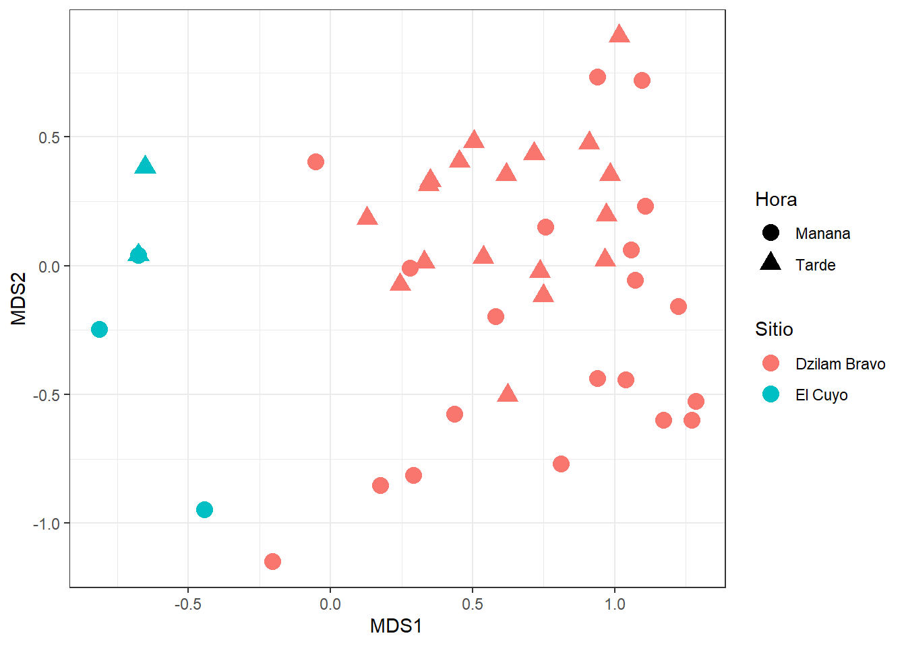

abstract: | El presente estudio es enfocado a conocer y comparar la diversidad de especies de peces en dos sitios dentro del Estado de Yucatán con diferentes condiciones ambientales, Dzilam de Bravo y El Cuyo. Se utilizó el protocolo AGRRA para muestreo de peces en ambos sitios y en dos tiempos: mañana y tarde. Los resultados mostraron una diferencia en las especies observadas tanto en espacio como en tiempo [(sin embargo) fueron o no significativas]. Este estudio provee de una base para la investigación, programas de coservación y manejo de recursos. Se recomienda para futuros trabajos muestreos en escalas más amplias de tiempo, así como la medición de las variables ambientales.
Esta investigación va dedicada al Dr. Edlin Guerra y la Dra. Maria Muciño por guiarnos en la realización de la misma. Tambien a don Chuy por invitarnos unas aguas de coco, una disculpa a este último porque no nos la acabamos y tuvimos que tirar dos porque ya olían gacho, para proximos estudios sugerimos dar nuestra tanda. Abrazo, abrazo, beso, beso, abrazo, abrazo, besote, abracito, beso, besito.
Los sistemas costeros son unos de los más afectados por las actividades humanas, especialmente porque hay una tendencia que favorece el desarrollo de nucleos poblacionales cercanos a la costa debido a que facilita actividades como el turismo y la pesca (barragán2015?) en especifico para estas dos actividades es importante conocer la biodiversidad de los sistemas marinos para poder aprovecharlos y conservarlos adecuadamente. Los peces en particular son un grupo de organismos muy conocido y abundante, tanto que representan casi la mitad de las especies de vertebrados a escala global (bingpeng2018?) resaltando así su importancia tanto en sistemas naturales como para la provisión de servicios ecosistémicos (rönnbäck2007?) . Se sabe sin embargo que tanto los peces de agua dulce como los de agua salada son amenazados por dramáticos decrementos poblacionales y un riesgo de extinción en aumento (arthington2016?). Por estas razones, es imperante conocer los factores que moldean la composición de especies; en el caso de sistemas acuáticos, el sustrato juega un papel esencial, ya la mayoría de los organismos utilizan un componente de este en algún punto de su ciclo de vida (rönnbäck2007?). Uno de los componentes más importantes del sustrato es la vegetación que lo acompaña. Este estudio se centra en caracterizar la diversidad de peces en la zona costera, para lo cual comparamos dos sitios: Dzilam de Bravo y El Cuyo; siendo la vegetación una caracteristica altamente contrastante, ya que el cuyo al ser una zona relativamente más conservada, no está asociado a las grandes coberturas de pastos marinos como las que se ven en Dzilam de Bravo, un sitio más perturbado, sobre todo por la descarga de agua contaminada en el mar (Kantun Manzano et al. 2018), se espera que por las características ambientales diferentes, la composición de especies en ambos sitios sea distinta.
Métodos
Los muestreos se realizaron en mayo de 2024 en dos municipios ubicados en el noreste de Yucatán, México: Dzilam de Bravo () y El Cuyo (). El mes en el que se hizo el muestreo coincide con la temporada de secas de la región ().
Muestreo
Se realizó el muestreo siguiendo la metodología propuesta en el protocolo AGRRA para peces (AGRRA, 2016). Debido a que esta metodología esta dirigida a ecosistema coralinos se les hizo modificaciones como el largo de los transectos (20 metros) y la profundidad de nado. Los muestreos se realizaron en dos horas del día: mañana (5:00 hrs a 11:30 hrs) y en la tarde (16:00 hrs a 18:30 hrs).
La presencia de pescadores en El Cuyo nos permitio, además de hacer el senso visual, realizar entrevistas sobre los peces que normalmente se puden capturar en la zona del muelle turistico ().
Resultados
?@fig-meaningless is generated using an R chunk.
Warning: package 'vegan' was built under R version 4.3.3
Loading required package: permute
Warning: package 'permute' was built under R version 4.3.3
Loading required package: lattice
This is vegan 2.6-6.1
Run 0 stress 0.1175441
Run 1 stress 0.124601
Run 2 stress 0.117544
... New best solution
... Procrustes: rmse 8.171589e-05 max resid 0.0003237226
... Similar to previous best
Run 3 stress 0.1266047
Run 4 stress 0.1186929
Run 5 stress 0.1313314
Run 6 stress 0.1484443
Run 7 stress 0.1283603
Run 8 stress 0.1193557
Run 9 stress 0.1217922
Run 10 stress 0.128614
Run 11 stress 0.1189155
Run 12 stress 0.1188864
Run 13 stress 0.126073
Run 14 stress 0.1330455
Run 15 stress 0.1241492
Run 16 stress 0.1406481
Run 17 stress 0.1222922
Run 18 stress 0.1208494
Run 19 stress 0.1240646
Run 20 stress 0.132934
*** Best solution repeated 1 times

Figura 1: MDS no métrico de las composición y abunndancia de peces observadas en Dzilam y el Cuyo, en horario matutino y vespertino.
Tables coming from R
Tables can also be generated using R chunks, as shown in Tabla 1 example.
knitr::kable(head(mtcars)[,1:4])
Tabla 1: Caption centered above table
mpg
cyl
disp
hp
Mazda RX4
21.0
6
160
110
Mazda RX4 Wag
21.0
6
160
110
Datsun 710
22.8
4
108
93
Hornet 4 Drive
21.4
6
258
110
Hornet Sportabout
18.7
8
360
175
Valiant
18.1
6
225
105
Discusión
lang:es
Los resultados muestran una composición de especies distintas en ambos sitios, esto se ve respaldado gráficamente en la fig. 1, y numéricamente con el valor obtenido de PERMANOVA [poner el valor], proponemos que una de las causas principales de este cambio se puede deber a las condiciones ambientales, tanto de la columna de agua como de el sustrato, se puede ver además en la fig. 1 que también se ve un patrón entre las especies observadas en la mañana y la tarde en ambos sitios.
Conclusión
El protocolo AGRRA para peces brinda una opción de muestreo estandarizado y accesible no solo para fines de docencia si no para la investigación formal, los resultados
References
Kantun Manzano, Cristian, Flor Arcega-Cabrera, Morgane Derrien, Elsa Noreña-Barroso, y Jorge Herrera-Silveira. 2018. «Submerged Groundwater Discharges as Source of Fecal Material in Protected Karstic Coastal Areas». Geofluids 2018 (marzo): 1-11. https://doi.org/10.1155/2018/9736260.